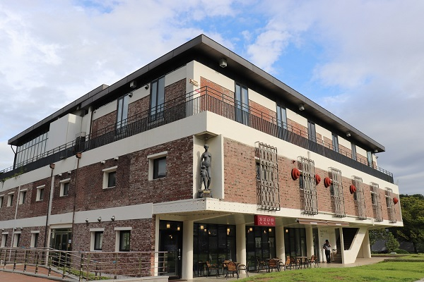
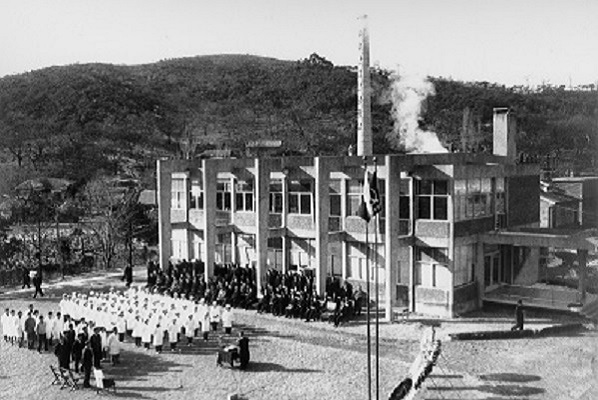
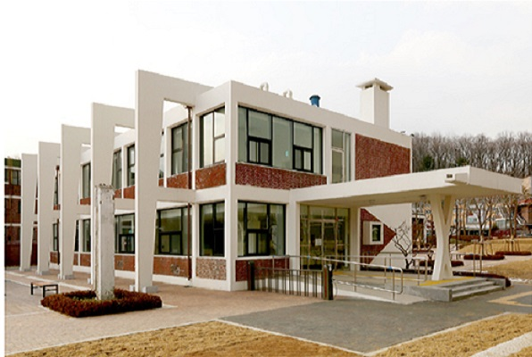

유유산업 안양공장(현 김중업박물관, 1959)



유유산업은 1953년 유한양행의 사장인 유일한 박사의 동생 유특한이 유한산업으로 독립하면서 시작되었다. 이후 급성장하다가 1959년에 안양에 공장을 세웠는데, 이 안양공장의 설계를 김중업이 맡았다.
기존의 공장들과는 달리 건축물에 설치된 조각상과 그 당시에는 생각하기 힘든 벽체 전체를 대부분 유리로 처리하고, 골격을 노출시켜 조형미를 주는 등의 파격적인 디자인으로 설계되었다.
현재는 리모델링되어 김중업박물관으로 쓰이고 있으며, 박물관의 전신인 유유제약 안양공장의 건물들을 설계한 건축가 김중업의 연보와 그의 여러 기록들, 그의 자필 원고와 설계도들, 건축물 모형 등이 전시되어 있다.